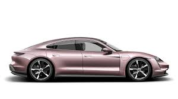
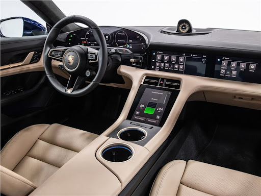
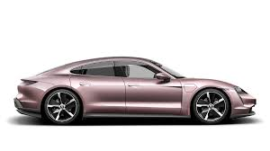
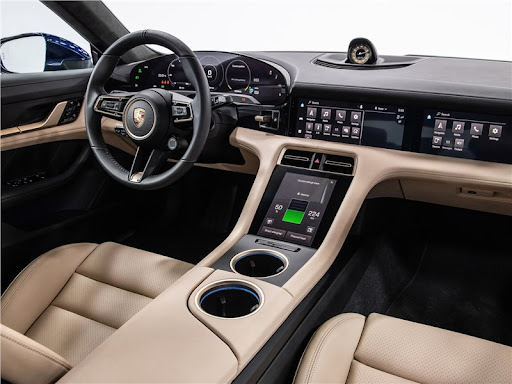

Porsche Taycan
Повністю електричний спортивний автомобіль з революційними технологіями.
 



Основні характеристики
- Максимальна швидкість: 250 км/год
- Розгін до 100 км/год: 3.2 секунди
- Потужність: 560 кВт (750 к.с.)
- Запас ходу: 400 км
- Тип приводу: Повний
Опис
Porsche Taycan – це майбутнє спортивних автомобілів. Повністю електричний автомобіль забезпечує миттєву потужність і плавність руху. Taycan ідеально поєднує продуктивність і екологічність.
У салоні Taycan все продумано до деталей: велика мультимедійна система, комфортні сидіння і футуристичний дизайн створюють незабутнє враження.
Ціна
$105,000